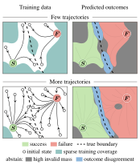
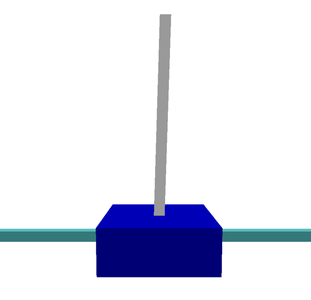
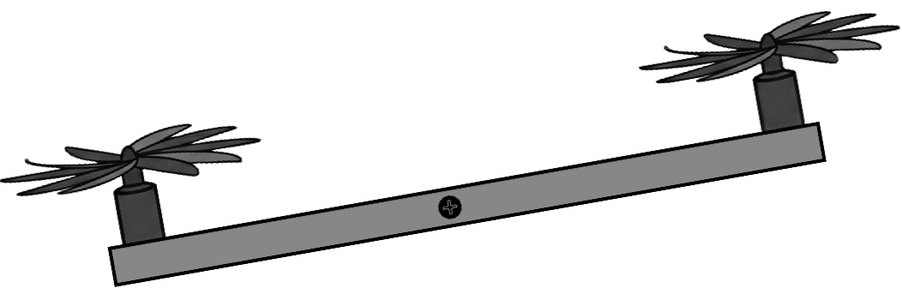
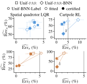

Abstract
Reach-avoid estimation predicts whether a controller reaches its goal before failure from a given initial state. Limited trajectory data leaves predictions uncertain even under deterministic dynamics. Allowing abstention can limit errors, but the predictor should still correctly identify as many outcomes as possible. Terminal-state predictions can inform abstention through checks against known termination conditions. PARSE (Prediction with Abstention for Reach-avoid under Statistical Error control) uses conditional flow matching to express uncertainty about the terminal state of each initial state through a predictive distribution. Predicted terminal states satisfying neither success nor failure conditions expose model error, while valid samples can disagree on the outcome. These signals guide additional trajectory sampling; thresholds on outcome probabilities determine whether to return success, failure, or abstention. Independent calibration provides simultaneous finite-sample bounds, at prescribed confidence, on the error rates among success and failure predictions for new queries under the same sampling and prediction protocol. At matched trajectory budgets, adaptive sampling improves mean recall for both outcomes after certification relative to uniform sampling in all six settings with linear-quadratic and reinforcement-learning controllers.
Names. PAR (Prediction with Abstention for Reach-avoid) is the predictor with thresholds fitted on validation data. PARSE (PAR under Statistical Error control) is PAR with certified thresholds. The prefix Unif- denotes uniform sampling of training trajectories.
Predictions as training data grows
Adaptive and uniform sampling start from the same initial batch of trajectories and add the same number in each of ten rounds. The slider steps through the training budgets and shows the certified predictions of PARSE (adaptive sampling) and Unif-PARSE (uniform sampling) at each one, for all six settings and all three seeds.
Preview build: only some seeds and settings have maps. Do not publish.
Test-set rates over the training budget
What is shown. For the pendulum, the maps cover every state of the 158 × 315 lattice that spans its state space. For the other settings they show a two-dimensional slice with the remaining coordinates held fixed, limited to the range from which initial states are sampled. In every map, the pendulum's included, each cell is classified from terminal-state samples drawn with that round's model and that round's certified thresholds (). The certificate bounds error rates over new queries drawn from the same distribution as the calibration queries, not the error at any single state, and a slice with fixed coordinates is not such a draw. The cells are not the test queries and use fresh terminal-state samples.
The numbers under the maps are the selected seed's rates on the test set. The curves repeat the certified learning curves of the paper (Figure 5 and Appendix B.3) with the three-seed mean, the min–max range, and the selected seed. Prediction errors average only the seeds that predicted the outcome. Before the first acquisition round the two arms have the same training data, and one model is shown for both, as in the paper's curves. When no threshold setting passes the calibration test, the predictor abstains everywhere.
Why abstain
Without analytical descriptions, only trajectory rollouts provide evidence of success and failure. An outcome predictor must generalize beyond sparse observed trajectories, which induce uncertainty. Near the boundary between successful and failing initial states, small deviations can change outcomes, so finer local data may be needed even with dense trajectory data.
Allowing for abstention avoids forcing a success or failure prediction. Within a fixed data budget, the objective is to maximize correct predictions while limiting errors among returned predictions.
The available trajectories offer more than binary outcomes. They reveal terminal states. When trajectories terminate on reaching a goal or violating state bounds, predictions outside the goal but within all bounds cannot be terminal, so terminal-state predictions can expose some model errors without the queried initial state's ground-truth outcome.

Method
PAR learns a conditional distribution over terminal states from trajectory data. At each queried initial state it checks how often sampled predictions satisfy the success and failure conditions. These estimates guide additional trajectory collection during training. At inference, a decision rule returns success, failure, or abstention.

Terminal-state model
Under the deterministic autonomous dynamics, all nonterminal states along a trajectory lead to the same terminal state . Each trajectory therefore supplies training pairs . PAR learns the predictive distribution from these pairs using conditional flow matching.
Outcome probabilities
For a queried initial state, PAR draws terminal-state predictions. A prediction is valid if it lies in the success set or the failure set and invalid otherwise, because the stopping rule permits termination only in these sets. The fractions give , , and the invalid mass .
Adaptive sampling
Invalid mass exposes model error. Disagreement among valid predictions gives , with the binary entropy in bits. Each round, a fraction of the new trajectories starts from the candidates with the highest acquisition score , and the rest are sampled uniformly. The model is retrained from scratch after each round.
Outcome prediction
Thresholds define a candidate success set and a candidate failure set . The predictor returns success or failure when the query lies in exactly one of them and abstains otherwise. The thresholds are fitted on validation data or certified on independent calibration data.
Statistical guarantee
Low validation error alone does not establish a bound on the probability that a prediction is wrong on a new query. Certification selects thresholds whose success and failure prediction errors satisfy specified limits with confidence , using a calibration set that is separate from the validation set.
Theorem 1
Under Assumption 1, let be the predictor returned by fixed-sequence testing of . With probability at least over the calibration queries,
is the probability that a returned outcome is wrong for a new query drawn from the same distribution as the calibration queries, under the same prediction protocol. Assumption 1 requires the error limits, the confidence parameter, and the calibration-set size to be fixed before the calibration data is drawn, and the calibration queries to be independent copies of a new query, jointly independent of the trained estimator and of the threshold sequence.
Certification tests a predetermined sequence of threshold settings with one-sided Clopper–Pearson bounds and stops at the first one that does not pass, returning the last setting that passed. Each bound uses the full , with no correction for the number of threshold settings or outcomes. If no setting passes, the predictor abstains for every query. The sequence starts with conservative settings and progresses toward higher recall. The bounds quantify the reliability of both decisions, even when the predictor abstains on many other states. The experiments use .
Results
The six settings span 2 to 12 dimensions and use LQR controllers or RL controllers trained with PPO. The pendulum and cartpole stabilize an upright equilibrium, with the cartpole also targeting a fixed cart position. Both quadrotors target level hover at unit height, with zero yaw for the spatial quadrotor. Reported rates are mean test percentages over three seeds.
 Pendulum
Pendulum
Cartpole
Planar quadrotor Spatial quadrotor
Spatial quadrotorNumber of training trajectories and of validation, calibration, and test states, and test success rates (Table 1 of the paper). Low success rates reflect evaluation across the state space, including states outside the controllers' training or recovery regions, such as upside-down quadrotor states.
Against prior-method adaptations. At the reported trajectory budgets, PAR achieves higher mean success recall than all four prior-method adaptations at fitted thresholds in every setting. Its largest advantage occurs on planar quadrotor RL (6D): 77.9% recall versus 24.2% for Part-X, with lower success prediction error. The comparison evaluates these adaptations, not the original methods' guarantees.
With certification. PARSE has the highest mean recall for both outcomes among the three learned predictors on the pendulum and all three quadrotor settings. Both cartpole settings are exceptions: BNN-Label has higher success recall under LQR, while PARSE-BNN leads both recalls under RL.
Adaptive sampling. With certification, adaptive sampling raises both mean recalls and reduces abstention in every setting relative to uniform sampling. The recall gains are larger under RL and largest on the planar quadrotor (6D).


Limitations
PAR and PARSE assume deterministic dynamics, noise-free observations, and finite termination in success or failure. Data demands remain substantial: the spatial quadrotor RL setting (12D) uses 40,000 simulated training trajectories for one controller. Future work should study sim-to-real transfer with limited physical-system trajectories while accounting for stochastic dynamics, observation noise, and simulator mismatch.
BibTeX
@misc{tangirala2026parse,
title = {Uncertainty-Aware Reach-Avoid Estimation with Statistical Guarantees},
author = {Tangirala, Sumanth and Ramesh, Dhruv Metha and Vieira, Ewerton R. and
Boularias, Abdeslam and Hung, Ying and Bekris, Kostas E.},
year = {2026},
note = {Under review at L4DC 2027}
}